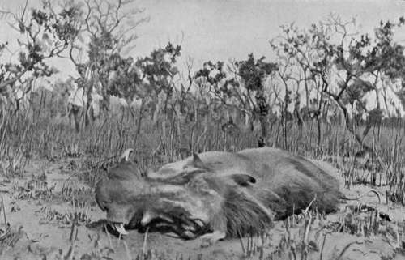

Chapter IX - II.— Field Notes On The Game. Part 4
Description
This section is from the book "Wild Life In Central Africa", by Denis D. Lyell. Also available from Amazon: Wild Life in Central Africa.
Chapter IX - II.— Field Notes On The Game. Part 4
Warthog keep their lower tushes very sharp, as they are constantly rubbing on the flat of the upper teeth ; and although the big tushes are often broken, the lower ones are generally in good order.
The skin on their knees is very hard, as in rooting in the ground they go down on their knees, so callosities are formed in the course of time.
Warthog Boar
A noticeable feature of warthogs is. that when running they hold their tails straight up, which gives them a rather ludicrous appearance. I have only heard of one instance of a warthog injuring a human being, and that was a native who met one on a narrow path near his garden one morning. I think it had probably been frightened, and on seeing him in the way it gashed his leg severely.
Many years ago I visited Sadiya in the northern parts of Assam, and the police officer told me that he had a Gurkha soldier in hospital who had wounded an Indian boar with a Martini rifle, and that it knocked him down and gashed and cut the softer parts of his body into ribbons ; but that he was recovering, as they were only severe flesh wounds. This shows the ferocity of the Indian pig. and it is certainly a much pluckier beast than the African warthog.
Warthogs are a greyish colour, and have long hair along the neck and back.
Bushpig (Potamochcerus Chasropotamus)
Native Names
Chinyanja - Nguruwe.
Chingoni - Nguruwe.
Approximate weight, ♂ | 220lb. |
Good average upper tush, ♂ | 5in. curve. |
Bushpigs are pluckier beasts than warthogs, although their teeth are smaller. The cutting teeth are thicker and kept very sharp. Bushpigs are heavier than warthogs and are of a reddish colour with long hair along the top of the neck and ridge of the back, and also hairy on the body.
I have mentioned cases of them attacking leopards, and I have no doubt that several of them could kill one of these animals if they managed to get him cornered.
There seems to be a variation in the size and colouring of bushpigs in different districts of this country, and those found on Mlanje Range in Nyasaland seem to me to be larger and much hairier than those found in other places. It is very cold on the plateau of Mlange Mountain during most of the year, especially at night, and I have little doubt that the pigs there have grown hairier skins as a protection against the lower temperature.
Bushpigs do great damage to native crops, and the natives usually make fences to keep them out of the gardens. On the other hand warthogs do not often invade the grain fields, as they prefer to keep to the bush and plains. I have heard of a small pig in this country which must resemble the peccary; but I never saw one. The natives mention the existence of this animal near ihe Luchenza River flowing past Mikolongwe, in Blantyre district, and a friend, Mr. W. P. Ronaldson, told me that he had seen their spoor, which was very small ; so I think it is probable that these little pigs exist there. They are said to keep to the thick bush during the daytime and only to go into the more open country in the hours of darkness.
Lions kill a great number of bushpigs and I should think they are better eating than the skinny, long-snouted native pigs they also feed on when they can break into a kraal.
I should say that a big male bushpig is slightly heavier than a warthog boar, as he is thicker made and larger in the limbs.
Hyaena (Two Varieties)
(1) Spotted hyaena (Hyaena crocuta).
(2) Brown hyaena (Hyaena brunnea).
Native Names (Spotted Variety)
Chinyanja - Fisi.
Chingoni - Pisi.
Approximate weight, ♂ ......... 1251b.
There are two varieties of hyaenas in Central Africa, but the spotted hyaena is the only one that is likely to be met with, and I ne^er saw a specimen of a brown hyaena although I heard of one being shot in Mlanje District many years ago. I have also heard that they are slightly more numerous in Portuguese East Africa, which adjoins Nyasaland.
The cry of the spotted hyaena will often be heard at night, and the repertoire of the hyaena in the making of weird sounds is unique.
Hyaenas howl, shriek, cackle, clack, and laugh according to the state of their stomachs, and if a dead elephant or other large animal has been left out for a night, all in the district seem to collect for the dinner party.
Lately I left a bull elephant, and on coming back next morning, I found that the hyaenas had eaten half the trunk. I made a fence round this elephant, which took more than half the day, so by nightfall I had only got out the tusks and cut up part of the animal. The hyaenas that had visited the carcass on the previous night came back at dark with many more, and I will never forget the sounds they made that night. One could hear their cries of disappointment in finding the natives and myself camped near, for the natives slept inside the enclosure, and I in my tent, pitched about fifty yards to windward so as to escape the strong stench.
As the natives had fires and I had not, the hyaenas kept roaming round the tent in a most fearless way, and, as they sang their various songs quite close to my ears, I could not sleep much.
If hyaenas cared to, they might be dangerous, as they are possessed of tremendous power in their jaws, and, considering the amount of walking they do in search of food, they must be wiry and hard. Occasionally they will take half the face off a native or give a human being a tearing bite in the leg, but, considering their numbers, they do little harm.
I have seen the thigh-bone of a big elephant broken in half by them, and this, of course, was not the result of one bite, but continual gnawing and crunching.
Any ordinary bone they will snap with a single bite, and, as they feed mainly on bones left by lions and leopards, their droppings are usually of a bluish-white colour. It is often easy to see what a carnivorous animal has been feeding on from the nature of its dung. There is a difficulty in telling the sexes of hyaenas, as the organs are similar. I once weighed a large male hyaena, and it scaled 1251b., and I do not suppose they ever exceed 1501b.
Continue to:
- prev: Chapter IX - II.— Field Notes On The Game. Part 3
- Table of Contents
- next: Chapter IX - II.— Field Notes On The Game. Part 5